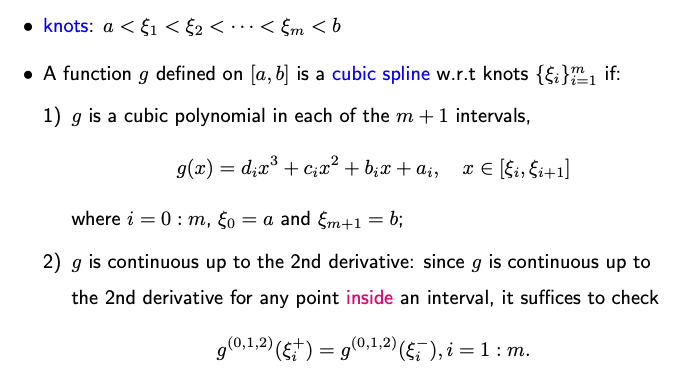

5.2. Cubic Splines
In our exploration of spline models, we’ll start by delving into the concept of the cubic spline, followed closely by the introduction of the natural cubic spline. Central to understanding both is the idea of piece-wise polynomials.
So, what exactly are piece-wise polynomials? To provide clarity, let’s keep in mind that our predictor, X, is one-dimensional. Picture the values of X being partitioned into disjoint intervals, some of which may even stretch to negative or positive infinity at their ends. Within each of these intervals, f(x) takes the form of a low-order polynomial, like a cubic function.
However, simply fitting a polynomial function might not be in our best interest, due to potential non-smooth transitions at interval breakpoints. To address this, we introduce certain constraints, ensuring that f(x) not only smooth throughout but also retains consistency up to certain derivatives.
As we become acquainted with cubic splines and natural cubic splines, the discussion will extend to their application in regression. There are two main applications: regression splines and smoothing splines. For now, consider regression splines analogous to ordinary least squares, while smoothing splines can be likened to ridge regression.
5.2.1. Cubic Splines
A cubic spline is a function that’s defined piecewise by individual cubic polynomials. Specifically, for any interval divided by m knots, the cubic spline ensures smoothness by being not only continuous but also having continuous first and second derivatives at every knot.
Let’s take an interval [a, b] of a one-dimensional feature \(x\). The interval is split into m+1 smaller intervals by m knots.
{kind=link}
Examples
Consider an interval [a, b] with two knots \(\xi_1\) and \(\xi_2\). Let’s look at the following two examples of cubic splines.
Example 1 (Global Cubic Function): If g(x) is a global cubic function, then it is also a cubic spline. This is because the function remains a cubic polynomial within each subinterval. As a global cubic function, it is inherently continuous up to its second derivative.
Example 2 (Specific Cubic Functions): Let’s consider another function, g(x), defined as
The graph of this function will be zero untill \(\xi_2\) and then follow a cubic trajectory thereafter. The main point of focus is the continuity at the knot \(\xi_2\). To the left of \(\xi_2\), g(x) is essentially a constant zero function, implying that the function, its first, and second derivatives are all zero. To the right of \(\xi_2\), despite it being a cubic function, its evaluation (or its derivatives) at \(\xi_2\) also equates to zero due to the term \((x - \xi_2)\). Hence, both the left and right sides of \(\xi_2\) align, making g(x) a valid cubic spline.
However, it’s worth noting that g(x) wouldn’t be continuous up to the third derivative, but that isn’t a necessity for a cubic spline.
Note: Every cubic spline is defined concerning a specific sequence of knots. Given a set of m knots, any cubic spline mentioned hereafter will implicitly refer to these knots.
Degree of Freedom
Every cubic spline is defined concerning a specific sequence of knots. For a given set of m knots, a cubic spline requires 4(m+1) parameters in total (4 for each cubic polynomial; there are m+1 cubic polynomials).
However, because of the smoothness conditions at each knot, there are 3m constraints in total (3 for each of the m knots).
So, the effective degree of freedom, or the number of independent parameters, for a cubic spline with m knots is 4(m+1)-3m = m+4.
5.2.2. Linear Subspace of Cubic Splines:
Given a set of knots, it’s crucial to understand that the resulting cubic splines constitute a linear subspace. To visualize, imagine a bag containing these splines. If you select any two cubic spline functions from this bag and create a linear combination, the result will also be a cubic spline and will reside within the same bag.
The justification is straightforward. Given two cubic splines, g1 and g2, both are piecewise cubic and continuous up to their second derivatives. These properties are preserved even when combining them linearly. Hence, the set of all cubic splines (with respect to the same set of knots) forms a linear space.
The dimension of this linear subspace is m+4, established from our earlier discussion. This means we can select m+4 linearly independent functions from this space, which serve as a basis. For example, a set of basis functions for cubic splines with m knots \(\{\xi_i\}_{i=1}^m\) are given below:
These basis functions are not unique, and while we presented one set, programs like R utilize the B-spline basis.
5.2.3. Natural Cubic Splines
A natural cubic spline is a special kind of cubic spline. While it retains the property of being a piecewise cubic polynomial function with continuity up to the second derivative, it exhibits linear behavior in the two extreme intervals.
Recall that a cubic spline has a degree of freedom of m+4. With natural cubic splines, the outer intervals, being linear, each have only two parameters, thereby reducing the degree of freedom by four. Consequently, the degree of freedom for a natural cubic spline is m.
Interestingly, when estimating curves using n distinct data points, if we position n knots at the n data locations and employ a natural cubic spline, we achieve a perfect fit. The spline will seamlessly pass through all data points.
Similarly, we can show that cubic splines form a linear subspace with an m degree of freedom. The detailed construction of these basis functions is complex and can be handled efficiently by tools like R.